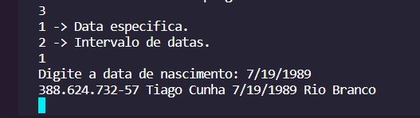

Como compilar meu programa:
Eu desenvolvi o programa usando VsCode junto ao terminal WSL, para que ficasse o mais próximo possivel do que o professor usa em sua máquina.
Os arquivos que o serão recebidos pelo professor são: avl.hpp, cpf.hpp, data.csv, date.hpp, main.cpp, node.hpp, pessoa.hpp e a descrição do projeto. Segue imagem abaixo:
Para compilar o programa, abra o terminal integrado e use o código: g++ main.cpp -o run ; ./run

Após isso, será criado um arquivo com nome run
O programa deve ser iniciado automaticamente apresentendo a seguinte tela:
Neste momento, o programa espera receber um valor númerico entre os listados.
Digitando 1 será iniciado a busca por CPF. Neste momento, o programa espera receber uma string no formato padrão de CPF. Ex: 000.000.000-00
Caso o CPF esteja cadastrado, será mostrado o CPF, nome, sobrenome, data de nascimento e cidade natal.
Caso o CPF não esteja cadastrado, o programa dirá que não há ninguém com este CPF.
Após a tentativa de busca de CPF, o programa voltará ao menu principal e aguardará novamente um valor númerico.
Digitando 2 será iniciado a busca por NOME.
Neste momento o programa aguarda um novo inteiro. Ao digitar 1, o programa esperará receber um NOME para fazer a busca na árvore. Caso haja mais de uma pessoa com este NOME será mostrado todas estas pessoas. Vale lembrar também que o programa é case sensitive, ou seja, "Atilio" é diferente "atilio".
Após a tentativa de busca de nome, o programa voltará ao menu principal e aguardará novamente um valor númerico.
Mas caso você esteja no menu anterior e digitou 2, o programa esperará receber uma substring para pesquisar TODAS as pessoas cujo o nome inicie com a substring. O fato do programa ser case sensitive se aplica aqui também.
Voltamos ao menu principal. Ao digitar 3, o programa iniciará a busca por data de nascimento
Neste momento aguarda um novo inteiro. Ao digitar 1, o programa esperará receber uma data de nascimento no formato 00/00/0000.

Após a tentativa de busca pela data de nascimento, o programa voltará ao menu principal e aguardará novamente um valor númerico.
Mas caso você esteja no menu anterior e digitou 2, o programa esperará receber duas datas de nascimento, neste momento é importante que o usuário digite a menor data de nascimento primeiro e a maior depois.
Voltamos ao menu principal. Ao digitar 4, o programa esperará receber uma string para que possa mostrar uma das árvores.
Neste exemplo eu digitei "Nome". Após mostrar a árvore, o programa diz quantos nós há na árvore. Segue trecho da amostra.
Voltamos ao menu principal. Ao digitar 5 o programa mostrará o menu novamente e ao digitar 999 o programa encerrará.